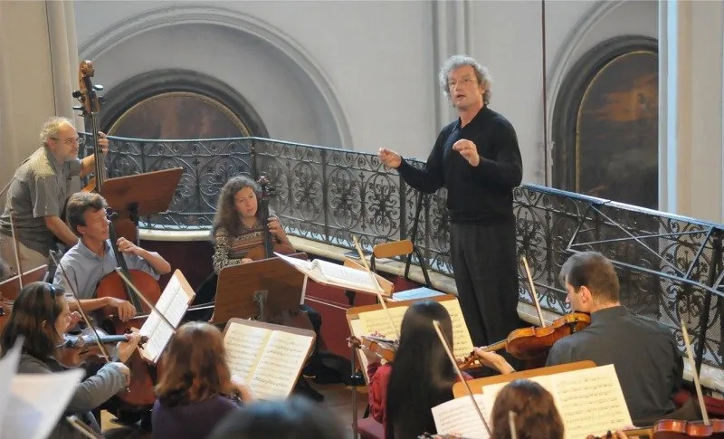
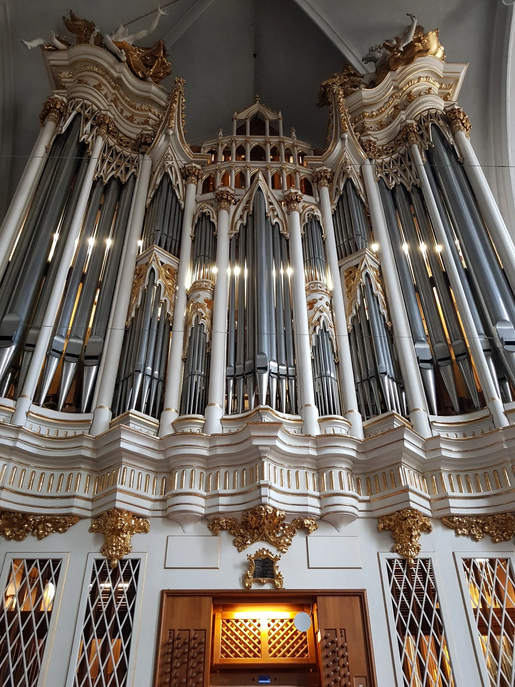

Musica sacra di Sant’Agostino
Grande musica.
Una tradizione viva.
Viva la musica sacra ai massimi livelli, che da secoli plasma la vita spirituale e culturale della Chiesa degli Agostiniani e ancora oggi entusiasma le persone.
Messe solenni a Sant’Agostino
Opere di Mozart, Haydn, Schubert, Beethoven e di altri grandi compositori fanno della Messa solenne un’esperienza musicale indimenticabile.
Direzione della musica sacra
Il direttore della musica sacra e il parroco guidano insieme la musica sacra di Sant’Agostino. Entrambi fanno in modo che l’antica tradizione della Musica sacra risuoni nella Chiesa degli Agostiniani ogni domenica, a gloria di Dio e per la gioia delle persone.

Peter Tiefengraber è nato nel 1991 ed è cresciuto a Pinkafeld (Burgenland). Dopo le lezioni con lo zio (pianoforte) e presso la scuola di musica locale (organo), dal 2005 è stato iscritto come studente straordinario all’Università delle Arti di Graz, Istituto di Oberschützen. Dal 2010 ha studiato organo e pedagogia strumentale con Ulrike Theresia Wegele al Conservatorio Joseph Haydn di Eisenstadt. Dal 2011 sono seguiti gli studi di teoria musicale (con Gesine Schröder) e, più tardi, la prosecuzione degli studi d’organo (con Pier Damiano Peretti; diploma nel 2017 con lode) all’Università di Musica e Arti dello Spettacolo di Vienna. Dal 2017 studia musica sacra cattolica. Per la sua ispirazione artistica sono stati importanti i corsi di perfezionamento d’organo con Michael Radulescu, Ludger Lohmann, Jon Laukvik, Jürgen Essl, Luigi Ferdinando Tagliavini, Jean-Claude Zehnder e Michel Bouvard.
È richiesto, in Austria e all’estero, sia come organista sia come teorico della musica, e ha pubblicato contributi di teoria musicale, tra l’altro sui Gottesminnelieder di Johann Nepomuk David e sulle cifre metriche di Anton Bruckner. Come concertista si è già esibito in Germania, Francia, Austria e Scozia, nonché in Messe trasmesse in televisione e alla radio.
Dal 2015 si è fatto ascoltare regolarmente come organista ospite nella Chiesa degli Agostiniani di Vienna e nel Duomo di Eisenstadt. Con il coro della parrocchia di Pinkafeld esegue ogni anno grandi Messe con orchestra di Mozart e Haydn. Nel settembre 2021 ha assunto, come direttore della musica sacra, la direzione generale della musica sacra di Sant’Agostino.
Contatti: +43 (0)699 17 18 72 70, peter(dot)tiefengraber(at)gmx(dot)at

Padre Matthias è parroco della Chiesa degli Agostiniani dal 2011 e decano del decanato cittadino Vienna 1 dal 2024. Da febbraio 2008 ad agosto 2021 è stato responsabile della pianificazione, dell’organizzazione e del finanziamento della musica sacra di Sant’Agostino.
Insieme ai confratelli del convento agostiniano e a HR Dr. Margarete Strassnig-Bachner ha dato vita al Sostegno di Sant’Agostino e ha ottenuto Franz Welser-Möst come patrono.
Come parroco fa in modo che liturgia e musica sacra formino un’unità. Questo caratterizza le solenni Messe solenni delle domeniche e dei giorni festivi, note ben oltre Vienna e celebrate da centinaia di fedeli da vicino e da lontano. Di più su di lui in Gli Agostiniani a Vienna (in tedesco).
Contatti: +43 (0)1 533 70 99, pfarrer(at)augustinerkirche(dot)at
Musica sacra di Sant’Agostino, Augustinerstraße 3, 1010 Vienna
Coro di Sant’Agostino
In ogni celebrazione Dio si fa vicino al suo popolo, e la comunità risponde con la sua lode. Il Coro di Sant’Agostino aiuta l’assemblea a elevare il cuore a Dio e canta a suo nome la lode del Creatore, in opere classiche come contemporanee.
Come la Chiesa stessa, un coro di chiesa è unità nella diversità, che loda Dio con una sola voce. Nuove cantanti e nuovi cantanti sono i benvenuti.
Sono invitati cantanti dotati, donne e uomini con esperienza corale, che amano le grandi Messe classiche, hanno tempo per prove regolari e desiderano cantare la domenica nella Chiesa degli Agostiniani.
Coro da camera di Sant’Agostino

Il coro da camera si dedica a programmi cameristici e a opere a cappella in occasioni particolari dell’anno liturgico.
Orchestra di Sant’Agostino

L’orchestra è una parte essenziale della musica sacra di Sant’Agostino. Vi suonano soprattutto musiciste e musicisti professionisti indipendenti, membri stabili anche di ensemble come la Wiener Akademie (Martin Haselböck) o il Concilium musicum (Christoph Angerer). Conoscono bene la prassi esecutiva storica, a vantaggio del repertorio delle Messe solenni, prevalentemente classico e del primo romanticismo.
Suonano spesso anche membri delle grandi orchestre viennesi, ad esempio dei Wiener Philharmoniker, dell’Opera di Stato, della Volksoper e della Radio-Symphonieorchester Wien. La formazione è curata dal direttore della musica sacra.
Gli organi di Sant’Agostino
La Chiesa degli Agostiniani possiede due organi: il grande organo Rieger del 1976 e il piccolo organo Reil del 1985, l’“Organo di Bach di Vienna”.

L’organo Rieger
- Costruito
- 1976 dalla ditta Rieger Orgelbau, Schwarzach (Vorarlberg)
- Cassa
- Johann Hencke, 1785
- Dimensioni
- 4 manuali e pedale, 48 registri
- Rinnovato
- 2002 Eisenbarth (Passau), 2018 pulizia e 2019 nuovo sistema di combinazioni da parte di Rieger, 2023 Untersatz 32′, Zimbelstern e carillon
Il grande organo fu costruito ex novo nel 1976 dalla manifattura organaria Rieger. La cassa storica di Johann Hencke del 1785 è stata conservata. Fino alla Seconda guerra mondiale ospitava uno strumento che Johann Hencke aveva costruito per la Chiesa degli Spagnoli Neri e che fu collocato a Sant’Agostino alla fine del XVIII secolo. Il gruppo di angeli sulla cassa è opera dello scultore rococò Johann Baptist Straub.

L’organo Reil
- Costruito
- 1985 dai fratelli Reil, Heerde (Paesi Bassi)
- Dimensioni
- 2 manuali e pedale, 25 registri
- Costruzione
- storica, secondo Gottfried Silbermann e Tobias Trost; somieri a tiro, trasmissione meccanica, temperamento Werckmeister III
- Proprietà
- Parrocchia di Sant’Agostino
Il piccolo organo fu commissionato dalle Wiener Festwochen per l’anno giubilare “300 anni di Johann Sebastian Bach” e benedetto dal cardinale Franz König, allora arcivescovo di Vienna. Materiali e tecnica costruttiva seguono l’arte organaria dell’epoca di Bach, da cui il soprannome “Organo di Bach di Vienna”.
Suona nelle celebrazioni e nei concerti d’organo.
Sponsorizzazione di Sant’Agostino
La Chiesa degli Agostiniani è conosciuta in Austria e ben oltre per le sue Messe solenni e, grazie alla sua tradizione secolare, è considerata un centro della musica sacra. Persone da tutto il mondo vengono a celebrare le Messe solenni con coro e orchestra.
Questa tradizione viva è minacciata per motivi finanziari. Il coro canta a titolo volontario, ma spartiti, compensi per solisti e orchestra e l’organizzazione costano molto. Con il suo sostegno la musica sacra di Sant’Agostino potrà continuare anche in futuro.
«Possiamo tutti ridiventare più sensibili all’arte della musica nella liturgia.»
Come donare
Accettiamo donazioni presso l’ufficio parrocchiale, al termine della Messa solenne o tramite bonifico. Ogni donazione è preziosa.
- Conto
- Patenschaft St. Augustin
- Banca
- Raiffeisenlandesbank NÖ-Wien AG
- IBAN
- AT85 3200 0000 1525 3743
- BIC
- RLNWATWW
Oppure doni comodamente online
Dona con PayPalModi per sostenerci
Informazioni presso il parroco P. Matthias Schlögl, la Dr. Margarete Strassnig-Bachner e l’ufficio della musica sacra presso l’ufficio parrocchiale. Può indicarci volentieri una data o una Messa particolare che desidera sostenere.
I sostenitori di Sant’Agostino
Ringraziamo tutti i nostri sostenitori per il loro generoso aiuto. Elenco dei sostenitori di Sant’Agostino
Chi canta prega due volte.